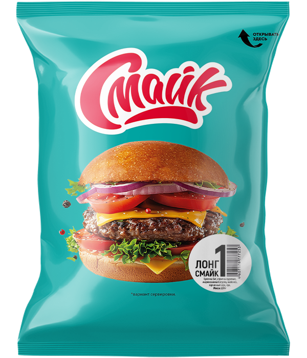

Бутерброд №1 ЛонгСмайк

Состав:
булочка, стрипсы куриные, майонез, горчичный соус, лук репчатый.
Масса:
220 г.
Пищевая и энергетическая ценность в 100 г продукта (средние значения):
Белки
– 12 г.
Жиры
– 9,5 г.
Углеводы
– 26,0 г.
Калорийность
– 240 ккал / 1000 кДж.
Закрыть окно